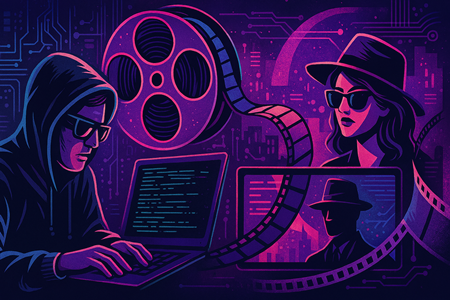
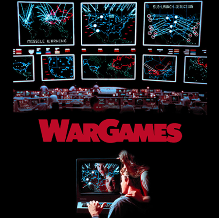
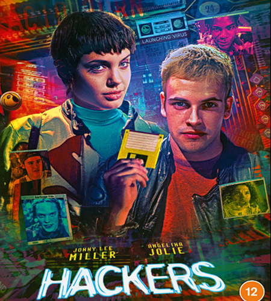
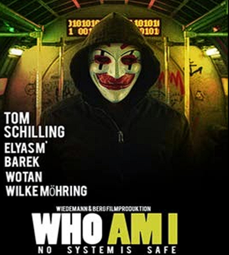

영화에 미친 주요 영향

해킹은 영화 속에서 단순한 기술적 소재를 넘어 사회적 불안과 디지털 시대의 윤리적 딜레마를 드러내며,
대중 문화와 보안 인식에 큰 영향을 끼쳤습니다.
해킹 장면은 긴장감을 극대화하는 장치로 활용되면서 동시에 현실의 보안 문제에 대한 관심을 높이는 계기가 되었습니다.
[영화적 위협]
1. 서사적 장치: 해킹은 보이지 않는 공간에서 벌어지는 전투를 시각화해 영화의 긴장감을 높이는 핵심요소로 자리잡았습니다.
2. 시각적 연출: 현실보다 과장된 3D 네트워크 그래픽, 즉각적인 암호 해제 장면 등은 관객 이해를 돕고 몰입하게 만듭니다.
[대중문화적 위협]
1. 해커 이미지: 영화 속 해커는 종종 반체제적 영웅이나 악당으로 묘사되어 대중의 해킹에 대한 인식을 형성합니다.
2. 보안 인식: 해킹을 다룬 영화들은 대중에게 사이버 보안의 중요성을 알리고, 실제 보안 위협에 대한 경각심을 불러일으켰습니다.
[사회적 파급 효과]
1. 보안 관심 촉진: 정보 보안, 사이버 보안에 대한 학습 동기를 제공합니다.
2. 정책 및 법률 영향: 사이버 범죄에 대한 인식이 높아지면서 관련 법률과 정책 수립에 영향을 미쳤습니다.
3. 위험의 미화: 해킹을 영웅적 행위로 묘사함으로써 실제 사이버 범죄의 심각성을 간과하게 만들 수 있습니다.
영화 'WarGames'

'WarGames(1983)'는 해킹을 주제로 한 초기 영화 중 하나로, 젊은 해커가 군사 컴퓨터 시스템에 침입하여 핵전쟁 위기를 초래하는 이야기를 다룹니다.
이 영화는 해킹과 사이버 보안에 대한 대중의 관심을 불러일으키는 데 큰 역할을 했으며, 이후 해킹 관련 영화들의 토대를 마련했습니다.
[줄거리]
미국 공군은 핵 미사일 발사 훈련에서 인간 조종자가 명령을 거부하는 문제를 발견하고, NORAD 슈퍼 컴퓨터에 WOPR(전략 공격 시뮬레이션 프로그램)에
발사통제를 맡깁니다. 시애틀의 고등학생 해커 데이비드 라이트먼은 게임 서버를 찾다 WOPR에 접속하여 '세계 핵전쟁 게임'을 시작합니다.
그러나 WOPR는 이를 실제 핵전쟁으로 오인하고 미국과 소련 간의 긴장을 고조시킵니다. 데이비드는 친구 제니와 함께 이 위기를 해결하기 위해
노력합니다. 결국 WOPR에게 틱택토 게임을 시켜 무승부의 반복을 학습하게 하고, '이길 수 없는 게임은 하지 않는 것이 최선'이라는 결론에
도달해 핵전쟁을 중단합니다.
[영화적 의의]
1. 해킹과 인공 지능의 위험성을 대중에게 각인시킨 초기 작품입니다.
2. 냉전 시대 핵전쟁 공포와 기술 의존의 윤리적 문제를 결합하여 사회적 논의를 촉진했습니다.
이후 해킹을 주제로 한 영화와 미디어에 큰 영향을 미쳤습니다.
3. 제작비 1,200만 달러에 전 세계 수익 7,000만 달러를 기록하며 상업적으로도 성공을 거두었습니다.
영화 'Hackers'

'Hackers(1995)'는 90년대 해커 문화와 사이버 범죄를 소재로 한 범죄 스릴러 영화로,
젊은 해커들이 기업의 음모를 파헤치며 자유와 정의를 지키는 과정을 그린 작품입니다. 당시 청춘과 디지털 반문화의 상징으로 자리 잡았습니다.
[줄거리]
데이드 머피는 11살 때 월스트리트를 포함한 주요 시스템을 해킹하여 체포됩니다. 이후 그는 해킹을 멀리하고 평범한 삶을 살지만,
고등학교에 입학하면서 다시 해킹 세계로 돌아갑니다. 친구 조이가 장난삼아 정유회사의 슈퍼컴퓨터에 침입해 휴지통 파일을 복사합니다.
그러나 이 파일에는 회사의 불법 행위를 폭로할 증거가 포함되어 있었고, 데이드는 조이를 도와 진실을 밝히려 합니다.
이들은 음모를 밝히기 위해 전 세계 해커들과 연합해 진실을 세계에 알립니다.
[영화적 의의]
1. 해커를 단순 범죄자가 아닌 자유와 정의를 추구하는 반문화적 영웅으로 표사합니다.
2. 90년대 해커 문화와 사이버 세계의 매력을 대중에게 알리며, 이후 사이버 범죄를 다룬 영화와 미디어에 영향을 미쳤습니다.
3. 당시 최첨단 컴퓨터 그래픽과 해킹 장면 연출로 시각적 즐거움을 제공했습니다.
4. 기업 탐욕과 정보 자유, 디지털 윤리 문제를 대중에게 제기하며 사회적 메시지를 제공했습니다.
영화 'Who Am I'

'Who Am I(2014)'는 독일 영화로, 젊은 해커 그룹이 사이버 범죄에 연루되면서 벌어지는 이야기를 다룹니다.
젊은 해커들의 정체성과 존재감, 그리고 사이버 범죄 세계를 다룬 작품입니다. 현실적인 해킹 묘사와 반전 있는 서사로 국제적으로
큰 주목을 받았습니다.
[줄거리]
주인공 벤은 내성적이고 사회적으로 고립된 청년으로, 온라인 해킹 포럼에서 만난 해커 그룹 'CLAY'에 합류합니다.
CLAY는 대담한 사이버 공격을 통해 명성을 쌓아가지만, 점차 국제 사이버 마피아와 경찰의 추적에 휘말립니다.
벤은 전설적 해커 MR.X와 연결되면서 그룹 내에서 중요한 역할을 맡게 되고, 점점 더 위험한 게임에 빠져듭니다.
벤은 그룹 내에서 자신의 정체성을 찾으려 하지만, 사건이 복잡해지면서 자신이 누구인지, 무엇을 위해 싸우는지에 대한 혼란에 빠집니다.
영화는 마지막에 충격적인 반전을 통해 벤의 진짜 정체를 드러내며 관객에게 깊은 인상을 남깁니다.
[영화적 의의]
1. 현실적인 해킹 장면과 기술적 디테일로 해커 문화에 대한 깊은 이해를 제공합니다.
2. 젊은 세대의 정체성 탐구와 사회적 고립 문제를 해킹이라는 주제와 결합하여 독특한 서사를 전개합니다.
3. 국제적인 사이버 범죄와 해킹의 위험성을 현실적으로 묘사하여 관객에게 경각심을 일깨웁니다.
4. 여러 영화제에서 수상하며 비평가들로부터 높은 평가를 받았고, 이후 해킹 사이버 스릴러 장르에 영향을 미쳤습니다.
대중에게 'No System is Safe'라는 강력한 메시지를 전달합니다.